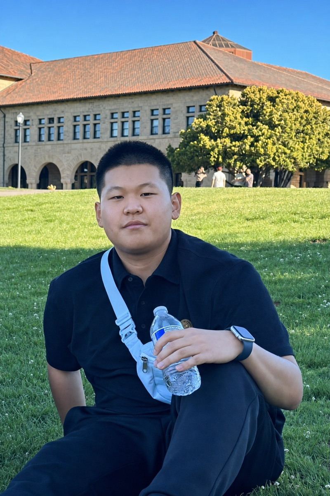

Yi (Jasper) Zhao
M.S. in Computer Vision student · Robotics Institute, Carnegie Mellon University
I am an incoming master's student in the M.S. in Computer Vision (MSCV) program at the Carnegie Mellon University Robotics Institute (Aug 2026 – Dec 2027). I received my B.S. (Honours) in Data Science from Hong Kong Baptist University (HKBU) in June 2026.
Since March 2026, I have been working as a research collaborator at the AirLab, CMU Robotics Institute, with Shibo Zhao, on foundation models for inertial perception — learning physically meaningful motion representations from raw IMU sequences, and building controllable generative models of inertial data to support robot state estimation.
Before moving into robotics, my research centered on medical image analysis: I developed segmentation-guided diffusion models for anatomy-preserving MRI generation (ICASSP 2026), deep-learning pipelines for material microstructure segmentation (AIPR 2025), and GAN-based super-resolution for diabetic retinopathy screening (ICDSE 2025).
Research interests: robot perception and state estimation, foundation models for sensing, generative models.

News
- Mar 2026Joined the AirLab at CMU Robotics Institute as a research collaborator, working with Shibo Zhao on foundation models for inertial perception.
- 2026Admitted to the M.S. in Computer Vision program at the CMU Robotics Institute (Fall 2026).
- 2025Paper on segmentation-guided diffusion for MRI generation accepted at ICASSP 2026.
- 2025Papers accepted at AIPR 2025 (titanium alloy microstructure segmentation) and ICDSE 2025 (retinal image super-resolution).
- 2024Won a Bronze Medal in a Kaggle Featured Competition.
Education

Carnegie Mellon University
Aug 2026 – Dec 2027M.S. in Computer Vision, Robotics Institute
Hong Kong Baptist University (HKBU)
Sep 2022 – Jun 2026B.S. (Honours) in Data Science

University of California, Berkeley
Jul 2024 – Aug 2024Summer Session — Probability & Statistics, Finance
Experience
AirLab, Robotics Institute, Carnegie Mellon University
Mar 2026 – PresentResearch Collaborator · with Shibo Zhao
Research on foundation models for inertial perception: learning 3-D motion representations from raw 6-axis IMU sequences across heterogeneous platforms (vehicles, quadrupeds, drones, humans), and controllable generative modeling of inertial time series for data-efficient robot state estimation.
Chinese Academy of Sciences, Suzhou
Jan 2025 – Feb 2025Deep Learning Engineer Intern
Built an SRGAN-based super-resolution pipeline for diabetic retinopathy fundus images on the APTOS dataset — preprocessing, architecture design, perceptual-loss optimization, and two-stage adversarial training; the work led to a paper accepted at ICDSE 2025.
China United Network Communications (China Unicom)
Jun 2024 – Jul 2024Machine Learning Engineer Intern
Analyzed 10k+ user records and built PyTorch forecasting models for provincial mobile-data demand (96% accuracy), engineering temporal and geographic features to support promotion strategies.
Publications
Segmentation-Guided Mamba Dynamic Diffusion Model for Anatomy-Preserving MRI Generation
IEEE ICASSP 2026
SegMaDiff injects tumor segmentation masks at every denoising step of a Mamba-based dynamic diffusion model, achieving state-of-the-art FID on BraTS-2023/2024 while preserving anatomical structure, and enabling mask-only restoration of corrupted MRI slices.
Automated Microstructure Segmentation in Titanium Alloys Using Deep Learning Techniques
IEEE AIPR 2025
A deep-learning pipeline (VGG U-Net and SegFormer) for TC4 titanium alloy metallographic images, reaching 90% pixel accuracy and 0.7 mIoU on 1024×1024 images with a customized IWMID + Otsu preprocessing workflow.
Super-Resolution Image Generation for Diabetic Retinopathy Detection by SRGAN
ICDSE 2025
An SRGAN pipeline with a VGG-19 perceptual module and two-stage adversarial training for fundus image super-resolution on the APTOS dataset, improving texture fidelity for downstream retinopathy screening.